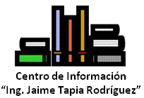

Bienvenido al portal del ITC
Somos una Institución de Educación Superior, consolidada en la Región Laja- Bajío del Estado de Guanajuato, con más de 55 años formando talentos comprometidos con la sociedad, con oferta educativa a nivel profesional, maestrías y doctorados, perteneciente al SNEST. Nuestros programas se reconocen por su buena calidad, por organismos evaluadores. En nuestros espacios educativos nuestros alumnos desarrollan las habilidades que les preparan para enfrentar los retos que el entorno demanda. Nuestros egresados tienen una amplia aceptación en los diferentes sectores, tanto en la región como al interior del país.



Información para los aspirantes que desean formarse profesionalmente en nuestra Institución.
Obtén información sobre formación y actualización docente y profesional así como enlaces a (SII) (SG)
Escucha XEITC radio tecnológico de Celaya.
Consulta en línea el catálogo del acervo bibliográfico, nuestro reglamento, relación de adquisiciones y más..
Obtén información sobre, convocatorias, fechas e información relacionada con recursos humanos.
En este enlace se encuentran los accesos a los medios de verificación de los programas que se encuentran en evaluación.


Consulta eventos y fechas oficiales.
Obtén información sobre becas, servicio social, actividades extra escolares.
Conoce todo sobre los cursos de idiomas, fechas, exámenes internacionales, eventos, etc.
Conoce las instalaciones y las actividades que se realizan dentro y fuera del tecnológico.
Obtén información sobre, reglamento, instalaciones y servicios que ofrece.
Cambio de Jefaturas Departamentales